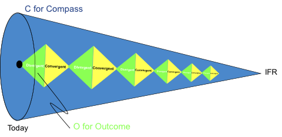

Hi, I know we were just in a workshop talking about the future of OGM but I didn’t yet get a strong sense of what the “ideal final result” (in TRIZ talk) would look like! In a breakout session of Group 1 @maparent pushed back — with robust rationale — on my perspective that the Purpose of OGM should be something that can be finished off once and for all. His example was that the purpose of Medicine is “curing disease”, and this is something that is only approached incrementally. Maybe another iteration of this discourse is to refer explicitly to an ideal final result, which is only ever approached but which is nevertheless definitive. In this case, for Medicine, perhaps the ideal final result is “immortality.” What is OGM approaching — not by 2025 but in an idealised sense?
